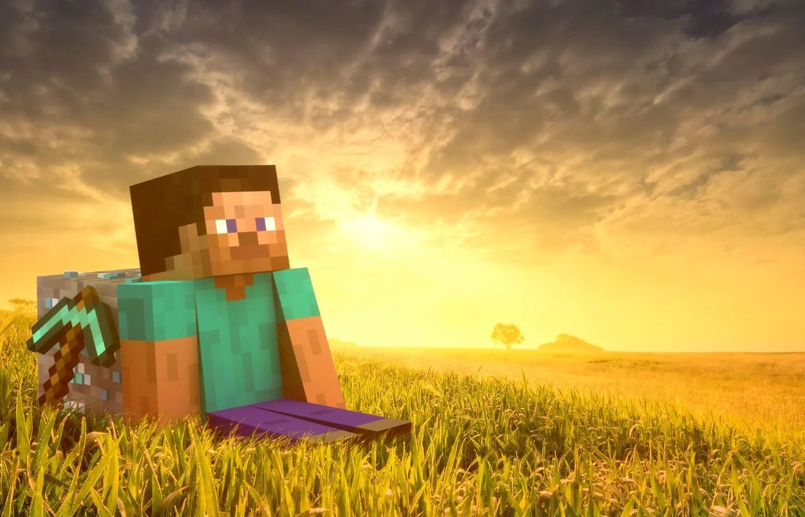

Supervivencia en solitario
Subnautica transforma reunir recursos en una expedición bajo el agua: fabricar herramientas amplía el territorio que puedes explorar y revela su historia. The Long Dark plantea una supervivencia más austera contra el clima y el hambre, con modos y dificultad seleccionables. Ambos funcionan bien para quienes disfrutan planificando sin depender de un grupo. Revisa opciones de accesibilidad y guardado antes de comenzar una partida extensa.
Cooperación y construcción
Valheim organiza el avance alrededor de biomas y expediciones; construir una base para el grupo hace que cada regreso tenga propósito. Grounded reduce la escala del mundo a un jardín y convierte la exploración en una aventura cooperativa. En estos juegos, define quién aloja la partida y cómo se guardan los mundos, sobre todo si no todos pueden conectarse con la misma frecuencia.

Tensión y decisiones
Don’t Starve Together combina estética peculiar, gestión de estaciones y cooperación exigente. Project Zomboid usa simulación detallada para construir historias emergentes de riesgo, aunque exige aprender bastantes sistemas. Para un grupo nuevo, selecciona un servidor privado y ajusta dificultad antes de jugar; un mundo público puede ser menos amable y no garantiza que el progreso pertenezca a una sola persona.
Cómo empezar con buen pie
En la primera sesión, dedica tiempo a aprender cómo conseguir agua, guardar recursos y volver a tu refugio. No cargues una lista de comandos de una versión vieja: actualizaciones y mods pueden cambiar controles. Si juegas en servidor, instala mods solo desde fuentes confiables y sincroniza versiones con amistades. Guarda con frecuencia si el juego lo permite y comprueba la política de pérdida de progreso.
Elegir dificultad y compañía
Subnautica ofrece una historia guiada con exploración; The Long Dark prioriza resistencia individual; Valheim y Grounded facilitan la cooperación. Don’t Starve Together y Project Zomboid ofrecen más presión y sistemas. Decide si quieres miedo, construcción o gestión, y ajusta la configuración a la experiencia del grupo. Un modo más accesible no resta valor a la aventura: facilita que la gente comparta el mundo.
Ciclo básico de una partida
La mayoría de los juegos de supervivencia siguen un ciclo de explorar, reunir materiales, fabricar herramientas, mejorar refugio y afrontar un riesgo mayor. Al inicio, prioriza recursos que preserven salud y una forma segura de guardar equipo. No emprendas una expedición larga sin conocer cómo regresar. El tutorial puede omitir detalles de clima, enfermedad o pérdida de objetos; prueba el sistema en una zona cercana antes de aventurarte lejos.
Servidor, mundo y progreso
En una partida cooperativa, averigua quién aloja el mundo y si seguirá disponible cuando esa persona no esté. Un servidor dedicado puede mantener progreso, pero quizá requiera administración y copias de seguridad. Antes de instalar mods, acuerda una lista y guarda el mundo original. Las reglas de muerte y pérdida de equipo influyen en la tensión; elige una dificultad que haga posible aprender sin convertir cada sesión en un castigo.
Consejos para no atascarse
Si un recurso no aparece, revisa el bioma y las herramientas necesarias en la versión actual, no una guía anterior a un parche. Guarda una reserva para reparar equipo y marca el camino de vuelta con señales del propio mundo. Alterna exploración con construcción para que la progresión tenga pausas. En cooperativo, reparte roles de recolección, navegación y combate, pero permite que el grupo cambie de tarea si una función deja de ser divertida.
Supervivencia accesible y ajustes personales
Muchos juegos permiten modificar hambre, resistencia, pérdida de objetos o agresividad de enemigos. Esos ajustes cambian el tipo de reto y pueden ser la diferencia entre construir con calma y reiniciar una expedición. Si el grupo tiene experiencia desigual, acuerda parámetros que no conviertan a una persona en carga ni a otra en guía permanente. Activa leyendas o subtítulos si los sonidos son una pista importante. En servidores privados, utiliza lista de acceso y copia de seguridad; en mundos locales, acuerda con qué frecuencia se sincroniza la partida. La dificultad ideal es la que mantiene la tensión sin impedir que el grupo aprenda.
En resumen
Elige el tipo de presión que te divierte y revisa modos, multijugador y requisitos del juego concreto. Con una primera meta pequeña, los sistemas de supervivencia se vuelven más manejables.
Preguntas frecuentes
¿Qué juego de supervivencia es mejor para empezar?
Grounded y Valheim ofrecen cooperación accesible si el grupo quiere aprender junto.
¿Cuál es mejor para jugar solo?
Subnautica y The Long Dark priorizan la experiencia individual.
¿Los juegos de supervivencia tienen final?
Algunos cuentan una campaña; otros se enfocan en mundos de progreso abierto.
¿Cómo afecta un mod a la partida?
Puede cambiar reglas y compatibilidad. Todos los jugadores del grupo deben usar versiones compatibles.
Fuentes y lecturas
Consulta la fuente original cuando exista y su fecha; los anuncios, el catálogo y las guías de terceros pueden cambiar.